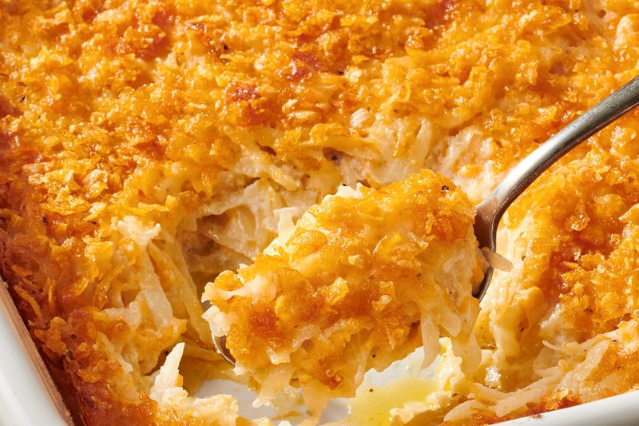

Lasagna

Homemade Lasagna is a classic recipe that every cook should have in their rotation.
Lasagna (US: /ləˈzɑːnjə/, also UK: /ləˈzænjə/;[1] Italian: [laˈzaɲɲa]; also known as lasagne, Italian: [laˈzaɲɲe]) is a type of pasta, possibly one of the oldest types,[2] made of very wide, flat sheets. Either term can also refer to an Italian dish made of stacked layers of lasagna alternating with fillings such as ragù (ground meats and tomato sauce), béchamel sauce, vegetables, cheeses (which may include ricotta, mozzarella, and Parmesan), and seasonings and spices.[3]
Lasagna originated in Italy during the Middle Ages. The oldest transcribed text about lasagna appears in 1282 in the Memoriali Bolognesi ("Bolognesi Memorials"), in which lasagna was mentioned in a poem transcribed by a Bolognese notary;[4][5] while the first recorded recipe was set down in the early 14th-century Liber de Coquina (The Book of Cookery)
Ingredients
- Ground beef
- Onion
- Garlic
- Tomatoes
- Salt
- Noodles
- Eggs
- Cottage Cheese
- Mozzarella
- Grated Cheese
- Parsley
Steps
- Make the Tomato Sauce: Add the ground beef, onion, and garlic to a large skillet and cook on medium-high until the meat is no longer pink. Pour in the crushed tomatoes and season with salt and pepper to taste. Cover the pan and simmer on low heat for 20 minutes, stir a few times.
- Make the Cheese Mixture: Beat the eggs in a large mixing bowl and add the cottage cheese, a half cup of mozzarella, Pecorino Romano, and parsley.
- How to Layer Lasagna: Spread a cup of meat sauce on the bottom of a 13-x-9- inch casserole dish, followed by four lasagna noodles, a third of the cheese mixture, and a cup of sauce, and repeat. Next, pour the remaining sauce on top and sprinkle with the rest of the mozzarella.
- How Long to Bake Lasagna: Cooking time is about 1 hour. Cover the baking dish tight with aluminum foil to create steam to cook the noodles, and bake for 55 to 60 minutes until the pasta is cooked through. Uncover and cook for another five minutes until all the cheese browns slightly.
- Garnish the lasagna with parsley and let sit for five minutes before cutting into eight pieces.